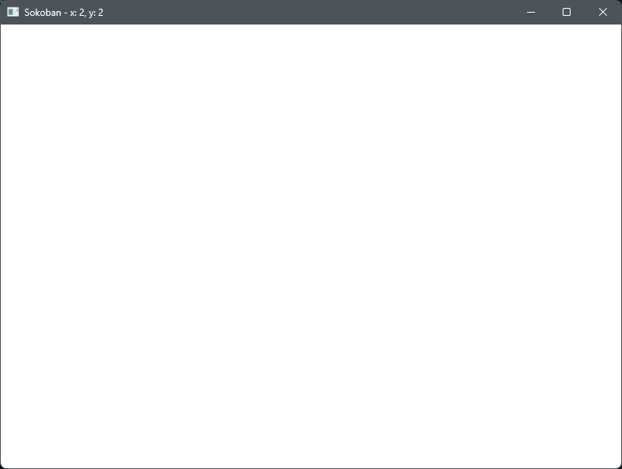
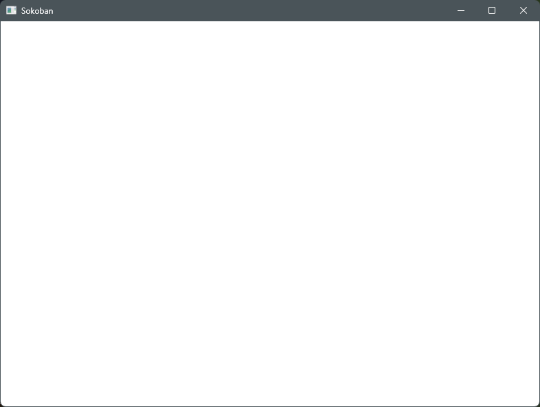

Win32 API로 소코반을 만드는 시리즈 2편입니다. WM_KEYDOWN 메시지로 방향키 입력을 받아 좌표를 움직이고, 제목 표시줄에 표시해 확인합니다. 가상 키 코드와 wParam, ESC로 창을 닫는 방법까지 다룹니다.

영상에서 직접 실행해 본 장면들입니다.

> 방향키 → → → ↓ ↓ 입력 > ESC 키 입력 창이 닫히고 프로세스 종료 (종료 코드 0) > tasklist | findstr sokoban (결과 없음)
1편 코드에서 24줄 추가, 0줄 변경되었습니다. 표시된 줄이 이번 편에서 바뀐 부분입니다.
1#include <windows.h>2#include <string>34int g_playerX = 0;5int g_playerY = 0;67void UpdateTitle(HWND hWnd)8{9 std::wstring title = L"Sokoban - x: " + std::to_wstring(g_playerX)10 + L", y: " + std::to_wstring(g_playerY);11 SetWindowTextW(hWnd, title.c_str());12}1314LRESULT CALLBACK WndProc(HWND hWnd, UINT msg, WPARAM wParam, LPARAM lParam)15{16 switch (msg)17 {18 case WM_KEYDOWN:19 switch (wParam)20 {21 case VK_LEFT: g_playerX--; break;22 case VK_RIGHT: g_playerX++; break;23 case VK_UP: g_playerY--; break;24 case VK_DOWN: g_playerY++; break;25 case VK_ESCAPE: DestroyWindow(hWnd); return 0;26 }27 UpdateTitle(hWnd);28 return 0;2930 case WM_DESTROY:31 PostQuitMessage(0);32 return 0;33 }34 return DefWindowProcW(hWnd, msg, wParam, lParam);35}3637int WINAPI wWinMain(HINSTANCE hInstance, HINSTANCE hPrevInstance,38 PWSTR pCmdLine, int nCmdShow)39{40 WNDCLASSEXW wc = {};41 wc.cbSize = sizeof(wc);42 wc.lpfnWndProc = WndProc;43 wc.hInstance = hInstance;44 wc.hCursor = LoadCursorW(nullptr, IDC_ARROW);45 wc.hbrBackground = (HBRUSH)(COLOR_WINDOW + 1);46 wc.lpszClassName = L"SokobanWindow";47 RegisterClassExW(&wc);4849 HWND hWnd = CreateWindowExW(0, L"SokobanWindow", L"Sokoban",50 WS_OVERLAPPEDWINDOW,51 CW_USEDEFAULT, CW_USEDEFAULT, 800, 600,52 nullptr, nullptr, hInstance, nullptr);53 UpdateTitle(hWnd);54 ShowWindow(hWnd, nCmdShow);55 UpdateWindow(hWnd);5657 MSG msg;58 while (GetMessageW(&msg, nullptr, 0, 0) > 0)59 {60 TranslateMessage(&msg);61 DispatchMessageW(&msg);62 }63 return (int)msg.wParam;64}
Visual Studio
main.cpp 를 추가명령줄 (x64 Native Tools Command Prompt)
cl /EHsc /std:c++20 /utf-8 /DUNICODE /D_UNICODE main.cpp /link /SUBSYSTEM:WINDOWS user32.lib gdi32.lib
코드는 흐름을 보여 주려고 에러 처리를 생략했습니다. 실제 프로그램에서는 RegisterClassExW·CreateWindowExW 의 반환값을 확인하세요.